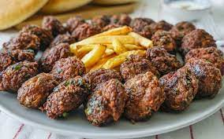

Kofte

Description
Türk mutfağında önemli bir yere sahip olan köftenin yaklaşık 290 çeşidi vardır.
Temel malzemesi kıyma olan köfte; ızgara, fırın ve kızartma gibi birçok teknikle hazırlanabilir.
- 1 soğan
- Yarım demet maydanoz
- 500 gr dana kıyma
- 1 yumurta
- 1 çay kaşığı zeytinyağı
- 1 çay kaşığı kimyon
- 1 çay kaşığı karabiber
- 1.5 yemek kaşığı galeta unu
- Tuz
- Köfte harcını hazırlamak için, soğanları rendeleyin ve maydanozları ince ince kıyın. İsterseniz, bir diş sarımsak da ekleyebilirsiniz. Kıymaya soğanı ekleyin.
- Maydanoz, yumurta, zeytinyağı ve tuzu, kıymanın üzerine ekleyip iyice yoğurun. Bu sırada istediğiniz baharatları da ekleyerek yoğurmaya devam edin
- Köfte harcının üzerini streç filmle kapatarak yarım saat buzdolabında dinlendirin.
- Ardından harçtan ceviz büyüklüğünde parçalar koparıp yuvarlayın. 1 cm olacak şekilde üzerine bastırarak yassılaştırın. Bu esnada tavaya sıvı yağ ekleyip kızdırın.
- Hazırladığınız köfte harçlarını kızgın yağda önlü arkalı olacak şekilde kızartın.
- Sıcak bir şekilde servis edin. Afiyet olsun.
back to main menu